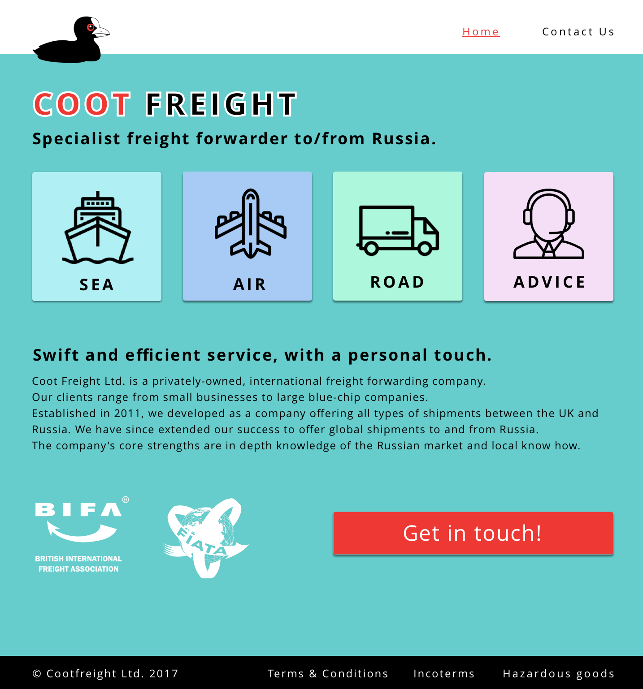
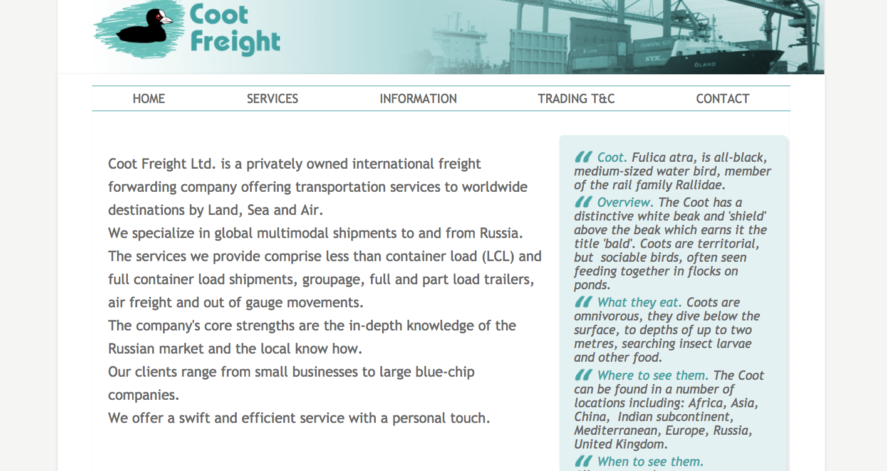

Coot Freight: Re-Designing A Company Website.
The client was an international freight forwarding company, in need of a website re-skin.
I conducted preliminary user testing on a range of shipping company websites. The discoveries I made about user needs were integral to prototyping solutions. The finalised solution is currently under construction on GitHub.
My re-design for the home page still retains the essence of the original website, but with more style and confidence than the older version...
I used: pencil and paper for rapid prototyping, Sketch, Photoshop CS6.